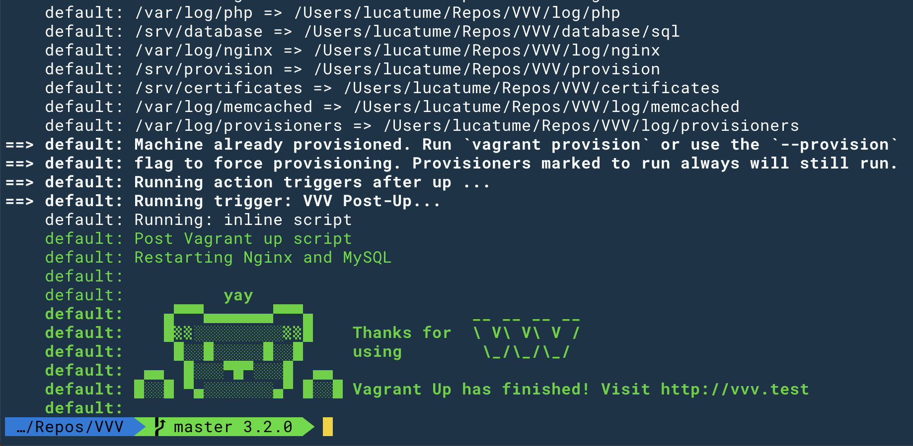
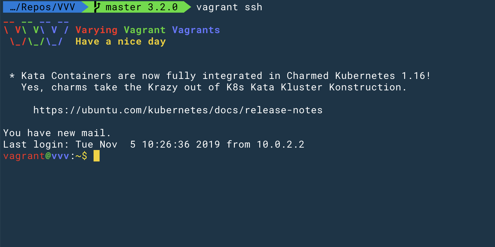
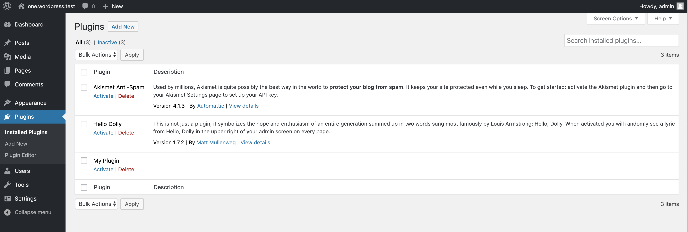
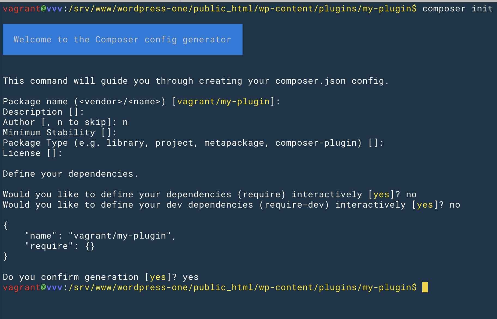
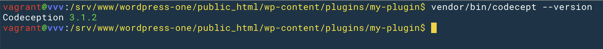
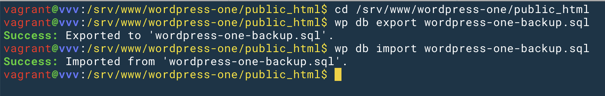
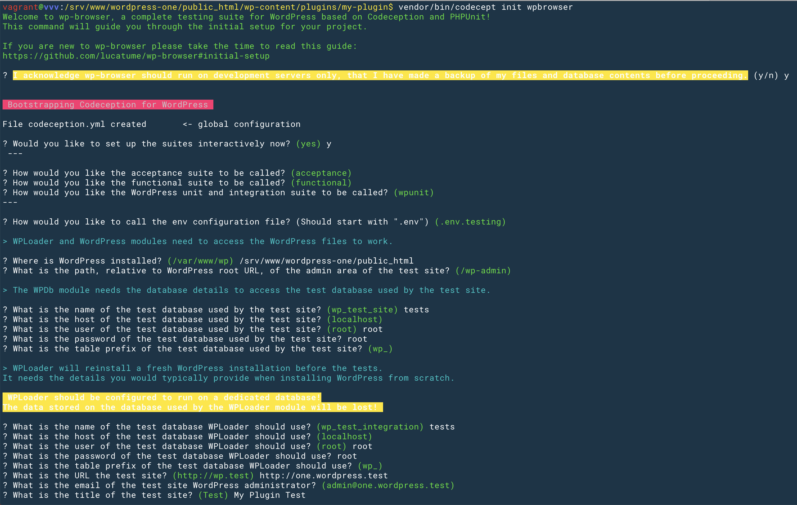
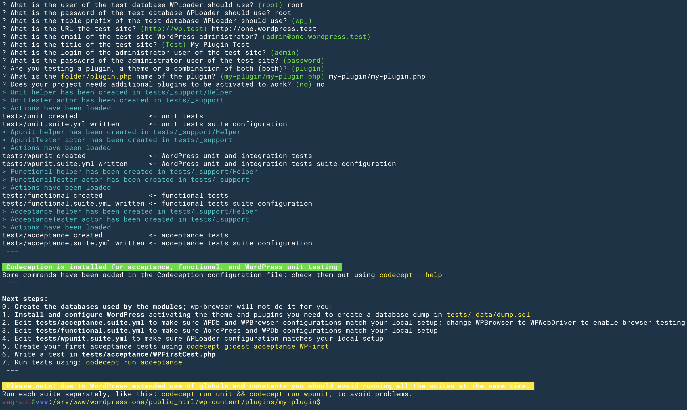

Setting up wp-browser on VVV to test a plugin
This is the documentation for version 3 of the project. The current version is version 4 and the documentation can be found here.
Setting up wp-browser on VVV to test a plugin
Requirements
- A Windows, Linux or Mac machine (I'll call this the "host machine" or just "host").
- A working installation of VVV; you should be able to navigate to VVV root directory, run the
vagrant upcommand, and have VVV up and running. - On the VVV installation you should be able to visit the two default sites URLs without issues; the two default sites addresses are:
- http://one.wordpress.test
- http://two.wordpress.test
Why VVV?
The VVV project provides a "a Vagrant configuration for developing with WordPress" and is an excellent, no-frills, starting point to develop WordPress projects (themes, plugins and whole sites.
Based on Vagrant and Virtual Box, VVV removes the differences between systems by providing a uniform, Ubuntu Linux based, virtual machine that will bahave the same on Windows, Linux and Mac.
Configuring it to run WordPress tests is easy: let's get started.
Check VVV works correctly
This walk-through starts after VVV has been installed and is running on the host machine; the installation guide is clear and simple to follow and I'm not duplicating it here.
In the context of this guide I'm assuming VVV lives in the ~/Repos/VVV directory, that we are working on the my-plugin project and that the plugin is being developed in the default (wordpress-one) WordPress installation provided by the box.
If your VVV installation lies elsewhere, replace the ~/Repos/VVV with the actual directory in each command.
After completing the installation of VVV navigate to VVV root folder and run the vagrant up command:

After the automatic bootstrap and initialization process completed, VVV makes two WordPress sites available:
http://one.wordpress.test/is the first default site address.http://two.wordpress.test/is the second default site address.http://vvv.test/is VVV dashboard address.
You should be able to reach each one of the URLs above without issues, should this not be the case something during VVV setup did not go according to the plan and you should fix it before moving on.
If the sanity check above is complete it's time to move to the following part specific to Codeception and wp-browser setup.
In and out, host and guest
The Vagrant box provided by VVV goes beyond a simple MySQL, PHP and Nginx server stack and provides a complete WordPress development environment; tools like Composer, [grunt-cli][4992-0003], and [wp-cli][4992-0006] are ready to use.
This allows the entire development, when it comes to the CLI tools, to happen in the virtual machine and not outside of it.
"Inside the virtual machine" means the first CLI instruction to run from the ~/Repos/VVV folder (assuming that is the folder where VVV was installed) is this:

This will connect, via SSH, to the virtual machine as the vagrant user.
To exit from the SSH session inside the box, just type exit and return.
Note: any further instruction I'm showing here, beside the code editing that will happen in a dedicated PHP IDE like [PHPStorm][4992-0004] or [Sublime Text][4992-0005] on the host machine, will happen "inside the virtual machine".
When I say "host machine" I mean your laptop, desktop or whatever computer you're working on; when I say "guest machine" I mean VVV virtual machine; this is usually the case for any virtual-ish setup (Vagrant, Docker and the like).
Scaffolding the project folder
I'm assuming the scope of the development is to test the my-plugin plugin.
The first step is to create the bare minimum code required to make the plugin show up among the available WordPress plugins.
Create the main plugin file in the http://one.wordpress.test installation plugins directory, in the ~/Repos/VVV/www/wordpress-one/public_html/wp-content/plugins/my-plugin/my-plugin.php file:
The plugin should now show up, activate and deactivate correctly, among the plugins listed in the VVV default WordPress installation at http://one.wordpress.test/wp-admin/plugins.php.
By default, VVV administrator user name is
adminand password ispassword.

Installing wp-browser
Since Composer is provided from VVV, installing wp-browser requires entering the virtual machine (if you did not already):
Once inside navigate to the plugins folder.
The path is now relative to VVV filesystem structure so it won't be the same as the one used above that was, instead, in the context of the "host machine":

Composer will ask some questions to initialize the project, for the sake of this small guide the answers are not relevant.
Here is the composer.json file generated by the above answers:
Next require lucatume/wp-browser as a development dependency:
Composer installs any dependency binary file, an executable file, in the project vendor/bin folder.
To check Codeception is correctly installed run this command:

Since wp-browser requires Codeception, there is no need to require Codeception explicitly as a development dependency.
Setting up wp-browser
For those that might get lost while trying to set up wp-browser for the first time the VVV context provides an excellent base to understand the process.
wp-browser needs to know:
- Where the WordPress installation files are located: they will be loaded in integration and "WordPress unit" tests.
- How to connect to the WordPress site "normal" database: this is the database that stores the data of the site I would see when visiting the local installation URL (
http://one.wordpress.testin the case of the VVV default installation). - How to connect to the database dedicated to the integration and "WordPress unit" tests: this database will be used to install WordPress during integration and "WordPress unit" tests.
Any test suite using a database should never run on a database containing data of any value; this means that if I am using VVV for my day to day WordPress development my first step should be to backup the site database.
You can create a backup of the current site database contents using wp-cli from within the virtual machine:
At any moment you can re-import the site database dump using this command, the site database will be reset to the state it was when you created the database dump:

Creating the database dedicated to the tests
wp-browser will use the databases it works on in a destructive way: between tests the data will be lost.
After the backup you should have done in the previous step, the next step is creating a database dedicated to the test.
At the VVV box command line run:
mysql -u root -p -e "CREATE DATABASE if not exists tests"
mysql -u root -p -e "GRANT ALL PRIVILEGES ON tests.* TO 'wp'@'localhost';"
When prompted for the password enter root.
The first command creates the tests database, if it does not exist; the second command grants the wp user all privileges on it.
In VVV the root database user name is
rootand the password isroot.
Check the database was correctly created running this command:
The tests database should be present in the list.
Bootstrapping and configuring wp-browser
After the backup is done it's time to bootstrap wp-browser using its interactive mode:
cd /srv/www/wordpress-one/public_html/wp-content/plugins/my-plugin
vendor/bin/codecept init wpbrowser
The initialization guide will ask a number of questions.
In the screenshots below are the answers I used to configure wp-browser.
 
Below a complete list of each answer:
- I acknowledge wp-browser should run on development servers...
y - Would you like to set up the suites interactively now?
y - How would you like the acceptance suite to be called?
acceptance - How would you like the functional suite to be called?
functional - How would you like the WordPress unit and integration suite to be called?
wpunit - How would you like to call the env configuration file?
.env.testing - What is the path of the WordPress root directory?
/srv/www/wordpress-one/public_html - What is the path, relative to WordPress root URL, of the admin area of the test site?
/wp-admin - What is the name of the test database used by the test site?
tests - What is the host of the test database used by the test site?
localhost - What is the user of the test database used by the test site?
root - What is the password of the test database used by the test site?
root - What is the table prefix of the test database used by the test site?
wp_ - What is the name of the test database WPLoader should use?
tests - What is the host of the test database WPLoader should use?
localhost - What is the user of the test database WPLoader should use?
root - What is the password of the test database WPLoader should use?
root - What is the table prefix of the test database WPLoader should use?
wp_ - What is the URL the test site?
http://one.wordpress.test - What is the email of the test site WordPress administrator?
admin@one.wordpress.test - What is the title of the test site?
My Plugin Test - What is the login of the administrator user of the test site?
admin - What is the password of the administrator user of the test site?
password - Are you testing a plugin, a theme or a combination of both (both)?
plugin - What is the folder/plugin.php name of the plugin?
my-plugin/my-plugin.php - Does your project needs additional plugins to be activated to work?
no
Codeception will build the suites for the first time and should be ready to go.
Setting up the starting database fixture
A "fixture", in testing terms, is a minimal, starting environment shared by all tests.
In BDD it's the Background any scenario will share.
In the case of a plugin the minimal, starting environment is the following:
- A fresh WordPress installation empty of any content.
- WordPress using its default theme.
- The only active plugin is the one you're testing, in this example:
my-plugin.
You can set up this fixture "manually", using the site administration UI at http://one.wordpress.test/wp-admin, or use wp-cli and save precious time.
The following command will empty the site, backup any content you care about first!
As it's been the case so far, I'm running the following command from within the VVV box (use vagrant ssh to log in):
cd /srv/www/wordpress-one/public_html
wp site empty --yes --uploads
wp plugin deactivate --all
wp plugin activate my-plugin
wp db export wp-content/plugins/my-plugin/tests/_data/dump.sql
The initial database fixture has been created, now there's one last step to complete.
Using the tests database in acceptance and functional tests
Acceptance and functional tests will act as users, navigating to the site pages and making requests as a user would.
This means that WordPress will load, and with it its wp-config.php file, to handle the requests made by the tests.
During the setup phase I've specified the database to be used for acceptance and functional tests as tests but, looking at the contents of the /srv/www/wordpress-one/public_html/wp-config.php file, the DB_NAME constant is set to wordpress-one.
What we'll do now means:
- If the request is a normal one, use the
wordpress-onedatabase. - If the request comes from a test, use the
testsdatabase.
In your IDE/text-editor of choice edit the ~/Repos/VVV/www/wordpress-one/public_html/wp-config.php and replace the line defining the DB_NAME constant like this:
- define( 'DB_NAME', 'wordpress-one' );
+ if( isset( $_SERVER['HTTP_X_WPBROWSER_REQUEST'] ) && $_SERVER['HTTP_X_WPBROWSER_REQUEST'] ) {
+ define( 'DB_NAME', 'tests' );
+ } else {
+ define( 'DB_NAME', 'wordpress-one' );
+ }
Here's the copy-and-paste friendly version:
if( isset( $_SERVER['HTTP_X_TEST_REQUEST'] ) && $_SERVER['HTTP_X_TEST_REQUEST'] ) {
define( 'DB_NAME', 'tests' );
} else {
define( 'DB_NAME', 'wordpress-one' );
}
If you look at the tests/acceptance.suite.yml and tests/functional.suite.yml files, respectively the acceptance and functional suite configuration files, you will see these entries in the WPBrowser module configuration:
This means that, with each HTTP request done during tests, the module will send the two headers.
Those headers are read, on the WordPress side, using the $_SERVER['HTTP_X_TEST_REQUEST'] and $_SERVER['X_WPBROWSER_REQUEST'] variables.
Codeception and wp-browser are ready to run and the test-drive development can start.
Sanity check
Before starting to write tests, take a moment to run each suite separately and make sure all is set up correctly.
If you run into issues, there's a chance you forgot something along the way, please take the time to read this tutorial a second time before opening an issue.
You have created 4 suites, each suite has at least one example test to make sure all works.
Run each suite and make sure all tests succeed, from within the box run:
cd /srv/www/wordpress-one/public_html/wp-content/plugins/my-plugin
vendor/bin/codecept run acceptance
vendor/bin/codecept run functional
vendor/bin/codecept run wpunit
vendor/bin/codecept run unit
You're now run to customize the suites to your liking or start writing tests, run vendor/bin/codecept to see a list of the available commands.